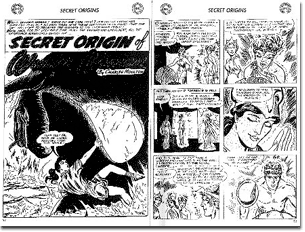

99年のサザビーのオークションに「スーパーマン」の第一作が掲載された「ACTION COMICS」１号「バットマン」第一作掲載の「Detective
COMICS」27号が出て、共に十数万ドルの値で落札されたという記事が、新聞に載っていた。正確な数字は忘れたが、99年版の「COMICS VALUES」というプライスガイドによれば、極美品で、前者が18万5000ドル、後者が16万5000ドルということになっている。たかが32ページほどのマンガに2000万円近い値が付くことに驚く人もいるかもしれないが、マンガだからこの値になったということなのかもしれない。
コミックブックは、アメリカにおいて、たぶんもっともコレクター人口が多く、古くからプライスガイド等が整備され、たくさんのコレクターショップが営業しているジャンルである。コミックブッククラブがあり、メールオーダーサービスも営業し、ファンダム活動も盛んであり、いくつものコンベンション、オークションも行なわれている。コレクター市場がきっちり作りあげられてしまったこの分野では、売って買うという行為がごく当たり前に行なわれており、子供たちも参加できるマネーゲーム的側面さえ持っている。
なにしろ前述の「ACTION COMICS」１号は、88年には２万ドル、92年には５万ドル、94年には９万ドル、99年には18万5000ドルと驚くほどに値上がりしているのだからだ。映画のヒットもあって、一時は「バットマン」人気が急上昇、コミックの値も両者が逆転したこともある。見方によっては、損とか下げのない確実な投資的な部分も、コレクターズ物は持っている。このことは、アメリカのマニア社会、コレクター社会を考える時、大きな意味を持っている。
さて、価格についてばかり語ってしまったが、いわゆる日本では?アメコミ?と呼ばれるコミックスは、前述の二作品に加え、せいぜい「スパイダーマン」「ワンダーウーマン」「Ｘメン」ぐらいしか知られていない。しかしスーパーヒーローの大量生産地であるそこでは、次々と新しいヒーローが生み出され、今も「バットマン」「スパイダーマン」などが描き続けられている。一人の（あるいは一組の）ヒーローが生み出されると、それは何人もの共同作業によって、出版社の財産となり、一つのプロジェクトとして、アーティスト、ライターなどを変えながら、何十年にもわたって描き続けられていくことになる。作家主体の日本のマンガとは製作のプロセス自体が全く違うといっていいだろう。
今なお人気の高いヒーローたちには「グリーンランターン」「キャプテンアメリカ」「フラッシュ」「ハルク」「ファンタスティックフォー」などがあり、「Ｘフォース」「タンクガール」など新しいヒーローも活躍している。ガイドブックを見るといったいどれだけのヒーローがいるかわからないぐらいだ。「アクアマン」「アベンジャーズ」「ブルービートル」「マーヴル・マン」「ムーンナイト」「ファントム」……。
アメコミの世界では、「スーパーマン」の第一作が始まった1938年から第二次大戦が終わった45年までを「Ｇ・Ａ」（ゴールデン・エイジ）と呼ぶ。ＤＣコミックが人気の中心だ。そして「フラッシュ」の第一作が発売された１９５６年から69年までは「Ｓ・Ａ」（シルバー・エイジ）と呼ばれている。「スパイダーマン」などマーヴル・コミックスの発展の時代である。この二つの時代とスーパーヒーロー物を中心に、アメリカのコミックマニア界は動いているのだが、もちろん、ヒーロー以外のものもたくさん描かれている。どういったジャンルがあるか、ガイドなどでよく使用される記号分類を元に整理してみることにしよう。
★コミックスのジャンル
An（Anthology）
Av（Aviation）
Cr（Crime）
D（Detective）
F（Funny）
H（Superhero）
Hr（Horror）
Hm（Humor）
J（Jungle）
LIT（Literature）
Mg（Magic）
M（Movie）
R（Strip Reprints）
Re（Religious）
SF（Science Fiction）
Sp（Sport）
TA（Teen Age）
Tr（True Fact）
W（War）
We（Western）
UG（Under Ground）

例えば、ターザン物はＪ、ディズニー物はＦ、モンキーズやキッスのコミックはＭに分類されることになる。それほど厳密なものではないがアメコミの広がりを知ることができるだろう。人気のＴＶ映画、映画、スターといったものは大半がマンガ化されている。学園ロマンスを扱ったＴＡがいわゆる少女マンガということになるが、70年代以後はあまり描かれていないようだ。以前のコミックプライスガイドでは、ロバート・クラム、「ジッピー」「ＺＡＰ」などのアンダーグラウンドコミック、ＳＥＸ物は掲載されていなかった。子供たちも読むことが前提だったためだろう。だが最近では、日本のマンガ（もちろんアメリカ版）などと共に掲載されるようになってきているが、まだ、充実してはいない。
やはり、コミックはＤＣコミック、マーヴル・コミックスを中心に市場が形成されているのだ。それは長年にわたって人気を得てきたヒーローを抱えているからである。これらのアメコミは、これまで、ＴＶ放映、映画封切などがきっかけとなって、何度か日本で紹介されてきた。50、60年代の「スーパーマン」、70年代の「スパイダーマン」、90年代の「Ｘメン」あたりが、日本ではちょっと流行った作品だ。小野耕世を中心とするアメコミの紹介も行なわれてきた。しかし、何処か日本の読者となじまないところがあるらしく、大きくブレイクするには至っていない。それでもいくつかのアメコミ専門店が存在するし、まんがの森などもコーナーを設けている。もちろん、新しい本が中心だ。
だから、こうしたコミックのマニア世界に入っていくには、プライスガイド、カタログなどを利用して、海外通販するしかない。アメリカでは、本をきれいに保存するためのファイル、サポートシート、紙ケースなど専門のものが作られている。何故なら、これは全てのコレクションについて言えることだが、物の保存状態が、価格に大きく影響してくるからである。海外から通販する場合だけでなく、アメリカのコレクター社会では、実際に手にとって確かめて買うことは少なく、多くがメールオーダーによってやり取りされている。そのため、状態について事細かに説明が必要とされるし、公式のルール（プライスも含めて）が作られることで、通販のトラブルを避けられるようになる。
それが、いわゆる状態を示す記号だ。プライスガイド、カタログなどで状態を示す記号について説明しておこう。
MT（Mint）完全なもの。刷りたてのように見える未使用品。極美品。
NM（Near Mint）ほぼ完全に近いもので、記名などもない美品。
VF（Very Fine）まあまあきれいな状態で、小さなサインや、角などの少々の折れ、切れがあることもある。
FN（Fine）ごく普通に読まれた状態で、テープ補修や日焼けはないもの。
VG（Very Good）平均的に読み古された状態のもの。ちょっとした傷、水ぬれなどは含む。
GD（Good）ページもカバーもそろっているが、日焼け、折れなどがあり、製本にガタがきていることもある。
FR（Fair）表紙が破れていたり、はずれていたり、汚本状態のもの。
PR（Poor）３分の１以上表紙がなかったり、落丁、ボロボロ状態をさす。
DUST JACKET 表紙なし。
通常プライスガイドでは、ＮＭ、ＦＮ、ＧＤの三つぐらいの段階で価格表示されている。ＭＴ状態のものはまず、古いものではないし、ＦＲ以下は売り物として適さないからだ。個々のカタログでは、もっと細かく表示される。インクの光り具合とか、紙の黄ばみ具合、折れや欠けの大小など、それぞれの状態の選定には細かな判断基準がある。価格の違いはだいたい以下のように決められているようだ。
MINT ＄6000
NEAR MINT ＄5000
VERY FINE ＄3500
FINE ＄2000
VERY GOOD ＄1000
この割合で、決められていることが多い。本のコンディション表示については、他の雑誌、ペーパーバック、パンフなど本の形をしたものに関しては同様の記述だと考えていい。
月刊で出ている「COMICBOOK MARKETPLACE」「COMICS VALUES」、季刊の「OVERSTREETﾕS ADVANCED COLLECTOR」、それらのＡＮＮＵＡＬ（年刊）、また「COMICBOOK
PRICE GUIDE」など、プライスガイドはたくさん出ており、この世界を知るには大いに参考になるだろう。毎年更新されていくいわゆる公定価格みたいなものから、様々なルールまで出来上がっており、全てが完備されている市場は、誰でもが入っていけるノスタルジックで、安心できるコレクター世界であり、業者にもなりやすいジャンルだといえる。その分、驚きや面白さには欠けるところがあるかもしれない。が、逆に古書世界でアメコミにはほとんど値のついていない日本では、見方によっては掘り出し物が出てくる可能性は高い。戦前も戦後も、日本には随分とアメコミが持ち込まれているはずだからだ。
こうしたマネーゲーム的側面もあるが、ファンのコンベンションなどでは、マニアたちのコミュニケーションが行なわれ、ネット上でも盛んに交流は行なわれている。また、コレクターの中から研究家も出てきており、大判の研究書や歴史書も多く出ている。強いスーパーヒーローへのあこがれと幸せだった子供時代へのノスタルジーは、アメリカにおいて、健全な趣味の典型なのかもしれない。最近では、新しい層として、日本のアニメやマンガファンたちが増加し、各種の大会を開くようになってきている。そうして、これらのコミックファンたちを「オタク」と見る見方も、生まれてきているようである。